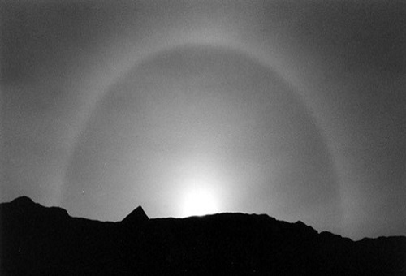
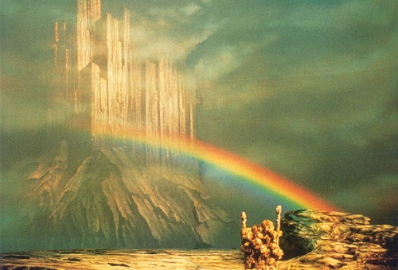
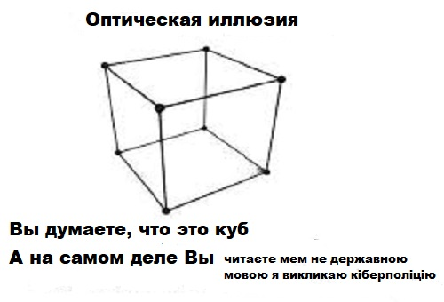

Історія дослідження
Наукове трактування фізичної появи веселки вчені та філософи намагалися пояснити ще з давніх часів:
- понад 2000 років тому Арістотель у своїй «Метеорологіці[en]» зазначав наступне: «Веселка ж ніколи не стає колом та її дуга не більша півкола. На заході та сході дуга [веселки] найбільша, а коло — найменше; коли ж [Сонце] піднімається вище, дуга стає меншою, але коло — більшим (7). після осіннього рівнодення, коли дні коротші, [веселка] з'являється у будь-який час доби, але літом ніколи не буває в полудні.»
- Роджер Бекон, францисканський монах, який викладав в Оксфорді, спершу спостерігав за заломленням сонячного світла в кристалах, в крапельках роси на листках, у водяних бризках від обертового млинового колеса. Потім досліджував саме явище веселки, звернувши увагу на те, що вона завжди з'являється на фоні хмар або туману. Бекон вказував, що промені, які повертаються від веселки в око, утворюють кут в 42° градуси з променями, що виходять від Сонця в бік веселки. У найважливішій праці Бекона «Великий твір» (1267 р.), в розділі про фізику, особлива увага приділялася саме оптиці
- 1306 року саксонський монах Теодоріх дійшов висновку що, пояснення властивостей веселки варто шукати в особливостях заломлення сонячних променів у краплях дощу; для дослідів використовував скляну кулю, наповнену водою. щоб змоделювати хід променів у краплі;
- Через 300 років (після Теодоріха) італійський монах ордену єзуїтів Марко Антоній де Домінус повторював експеримент зі скляною кулею. На підставі спостережень дійшов висновку, що веселка з'являється в результаті відбивання від внутрішньої поверхні краплі дощу і дворазового заломлення променів — при вході в краплю і при виході з неї. За життя єзуїт видав у Венеції трактат «Про райдугу зору та світла» (1611 р.). Після смерті монаха, його тіло спалили разом з трактатом
- Французький фізик і математик Рене Декарт (1596—1650 рр.) — у 1627 р. сформулював закон заломлення і у 1637 р. збудував траєкторію променя світла: від сонця — через краплю — до ока спостерігача. До того ж його обчислення допомогли з'ясувати що крапля, котра рівномірно освітлена сонцем, для нас виглядає по-різному — в залежності від кута, під яким ми її спостерігаємо;
- Ісаак Ньютон (1643—1727 рр.) був першим хто пояснив забарвлення веселки;
- Повна теорія веселки з урахуванням дифракції світла, яка залежить від співвідношення довжини хвилі світла і розміру краплі, була побудована лише в XIX столітті Дж. Б. Ері (1836) і Дж. М. Пернтером (1897).
Місячна_веселка
Причина
Веселка пов'язана з заломленням і відбиттям (деякою мірою і з дифракцією) сонячного світла у водяних краплях, зважених у повітрі. Ці крапельки по-різному відхиляють світло різних кольорів, у результаті чого біле світло розкладається на спектр. Спостерігач, що стоїть спиною до джерела світла, бачить різнобарвне світіння, що виходить із простору по концентричному колу (дузі).
Найяскравіша дуга (первинна веселка) утворена променями, що зазнали одного відбивання всередині крапель. Радіус цієї дуги становить 42°. Промені, що двічі відбилися від стінок краплі зсередини, утворюють вторинну веселку, радіус якої більший приблизно на 10°. Порядок кольорів у ній зворотний.
Центр кола, дугу якого описує веселка, завжди лежить у напрямку, протилежному до напрямку на Сонця (Місяця), тобто одночасно бачити Сонце й веселку без використання дзеркал неможливо. Для спостерігача на землі вона зазвичай виглядає як частина дуги кола; чим він вище, тим веселка повніша — з гори або літака можна побачити й суцільне коло.
Якщо водяні крапельки, що висять у повітрі, дуже дрібні (туман), веселка виглядає дещо по-іншому; це пояснюється хвильовими властивостями світла. Така веселка (відома як біла райдуга) ширша і значно слабше забарвлена.
У яскраву місячну ніч можна побачити місячну веселку. Людський зір влаштований так, що при слабкому освітленні працюють лише найчутливіші рецептори ока — палички, які не сприймають кольорів, тому місячна веселка виглядає білястою; чим яскравіше світло, тим «барвистіша» веселка (у її сприйняття включаються колірні рецептори — колбочки).
Біфрост
Послідовність кольорів
Традиційно умовно виділяють сім кольорів веселки в послідовності зменшення довжини світлової хвилі: червоний ( 740 нм), оранжевий (помаранчевий), жовтий, зелений, блакитний, синій, фіолетовий (> 380 нм). Цю послідовність легко запам'ятати за мнемонічною формулою, кожне слово якої розпочинається на літеру, що відповідає кольору. Наприклад:
- Чарівниця Осінь Жар-птаху Закликає Бабин Сад Фарбувати
- Чому Обізнані Життям Завжди Балакають Смішні Фрази?
- Червоні Окуляри Жанки Заважають Бачити Сяйво Фіалки
Оптична ілюзія
У міфології
У міфології веселка — символ посередництва між небом і землею.
У класичній міфології греків та римлян веселка уособлюється в Іриді, посланниці богів, зокрема Юнони. Швидка, як вітер, на золотих крильцях, вкритих росою, грається вона її крапками проти сонця, як дорогими самоцвітами.
У скандинавській міфології веселка — це Біфрост, міст перекинений з неба на землю
В авраамічних релігіях веселка — обіцянка прощення (припинення Потопу) і відродження: